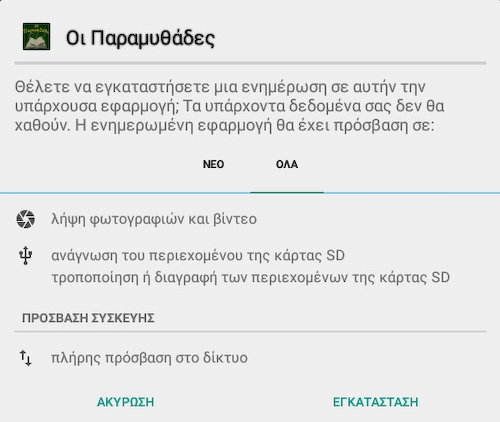

Οι Παραμυθάδες
Η εφαρμογή της ομάδας των Παραμυθάδων για κινητά τηλέφωνα (και τάμπλετς) με το λειτουργικό σύστημα Android.
| Χαρακτηριστικά
| Προσεχώς
| Εγκατάσταση
| Πείτε μας τη γνώμη σας
|

Χαρακτηριστικά
- η έκδοση 1.000 της εφαρμογής μας (2022-06-23)
- τα εικονίδια της αρχικής οθόνης συνοδεύονται από τους αντίστοιχους ήχους (2022-05-17)
- ελέγχει αν υπάρχει νεότερη έκδοση της εφαρμογής και καθοδηγεί το χρήστη για να την εγκαταστήσει (2022-05-16)
- ενσωμάτωση αντίστοιχων ήχων στο «Κρυφτό» για κάθε ζευγάρι ζώων (2022-02-26)
- προσθήκη παιχνιδιού «Το κρυφτό των ζώων» και αλλαγή εικονιδίων (στην αρχική οθόνη και στο παιχνίδι) (2022-02-23)
- προσθήκη σελίδας «Άκου ένα παραμύθι» με τυχαία επιλογή παραμυθιού από τα ηχογραφημένα@youtube και αναπαραγωγή του (2022-02-10)
- αντικατάσταση της φόρμας επικοινωνίας με άνοιγμα της εφαρμογής email της συσκευής ώστε ο αποστολέας να έχει τη δυνατότητα αποθήκευσης αντιγράφου του μηνύματος και επισύναψης αρχείου/αρχείων (2022-02-10)
- δυνατότητα κοινοποίησης παραμυθιού μέσω του κινητού/τάμπλετ στις σελίδες «Παραμύθι στην τύχη», «Πρόσφατα παραμύθια» και «Κατηγορίες» (2022-02-06)
- προσθήκη σελίδας για εμφάνιση των κατηγοριών των παραμυθιών με βάση τις λέξεις-κλειδιά (2022-02-05)
- δυνατότητα κοινοποίησης παραμυθιού μέσω του κινητού/τάμπλετ στην οθόνη αναζήτησης (2022-02-05)
- προσθήκη σελίδας για εμφάνιση των τελευταίων 10 παραμυθιών που έχουμε δημοσιοποιήσει (2022-01-31)
- προσθήκη σελίδας για εμφάνιση τυχαίου παραμυθιού για ανάγνωση (2022-01-16)
- προσθήκη εικονιδίων στην αρχική οθόνη (2022-01-14)
- προσθήκη σελίδας αναζήτησης λέξης/φράσης σε όλα τα άρθρα
- προσθήκη σελίδας επικοινωνίας με την ομάδα των Παραμυθάδων
- προσθήκη σελίδας με τα νέα μας
- έναρξη ανάπτυξης της εφαρμογής (2022-01-03)
Προσεχώς
- προσθήκη σελίδας για αποστολή ζωγραφιάς ως φωτογραφία
- προσθήκη παιχνιδιού «Παραμυθίζω»
Εγκατάσταση
- Κατεβάζετε το αρχείο paramythades apk στη συσκευή σας και το εκτελείτε.
- Θα σας ζητήσει να ενεργοποιήσετε τη ρύθμιση για εγκατάσταση εφαρμογών από άγνωστες πηγές (εκτός του Play Store δηλαδή), επειδή η εφαρμογή μας δε βρίσκεται στο Play Store. Μετά την εγκατάσταση, απενεργοποιήστε τη ρύθμιση.
- Πρόσθετα δικαιώματα (permissions):
- Πλήρης πρόσβαση στο διαδίκτυο (λογικό, αφού χρειάζεται να επικοινωνεί με το δικτυακό τόπο των Παραμυθάδων)
- Χρήση της κάμερας και αποθήκευσης των φωτογραφιών στον αποθηκευτικό χώρο του κινητού ή του τάμπλετ. Θα σας ζητηθεί αν επιλέξετε τη «Ζωγραφιά».
Εδώ μπορείτε να δείτε τη σχετική οθόνη με τα πρόσθετα δικαιώματα που χρειάζεται η εφαρμογή.

Πείτε μας τη γνώμη σας
Αν θέλετε να προτείνετε κάποια προσθήκη ή αλλαγή/διόρθωση στην εφαρμογή, γράψτε εδώ τις προτάσεις σας.
Τελευταία ενημέρωση: 2022-06-23
vim:ft=markdown:ts=4: